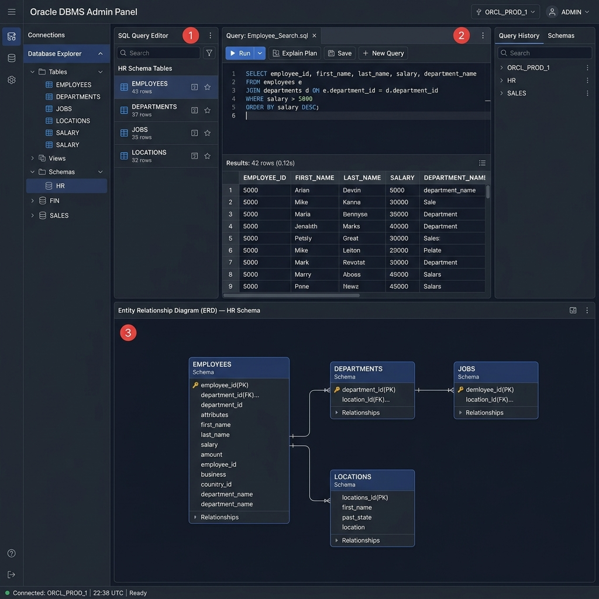

DatabaseEnterprise Database Management System
Full-featured Oracle-backed database administration platform providing schema management, query optimization, performance monitoring, and automated backup management.
- Visual ERD schema design and management
- Real-time query performance monitoring
- Automated backup scheduling and restoration
Oracle DB
MySQL
PHP
SQL
HTML5